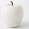
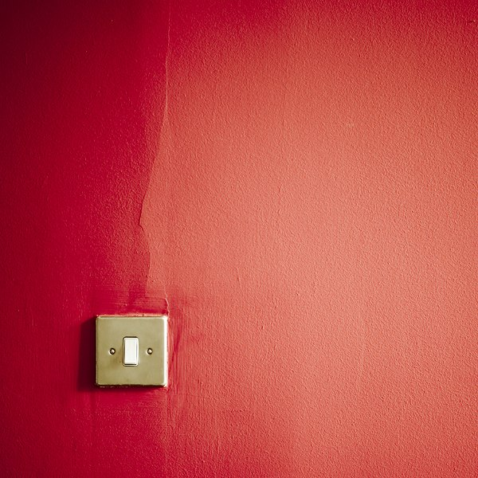

Ссылка для перехода на веб-ресурс
Ссылка для перехода на страницу в этой папке
Ссылка для перехода на страницу в соседней папке
Ссылка для перехода к заголовку А1
Ссылка для перехода к метке в разделе B1
Ссылка на почту с указанной темой сообщения
Эта ссылка откроется в новом окне
Эта ссылка откроется в текущем окне
Эта ссылка загрузится во фрейм-родитель
если фреймов нет, то это значение работает как _self
Эта ссылка откроет документ во всю ширину окна  - ссылка картинкой
Карта-изображение - это активная область на рисунке, являющаяся ссылкой на другие HTML документы
